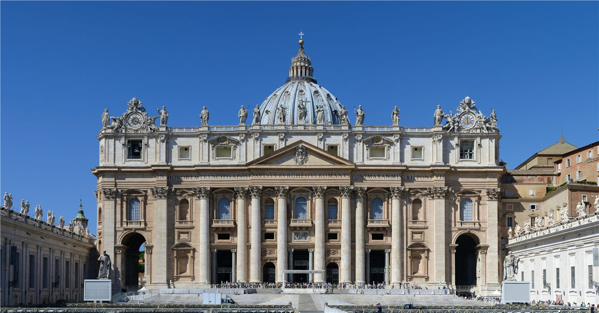
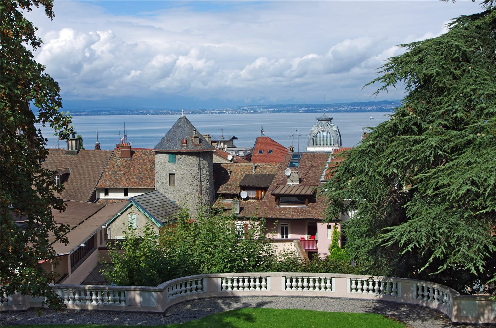
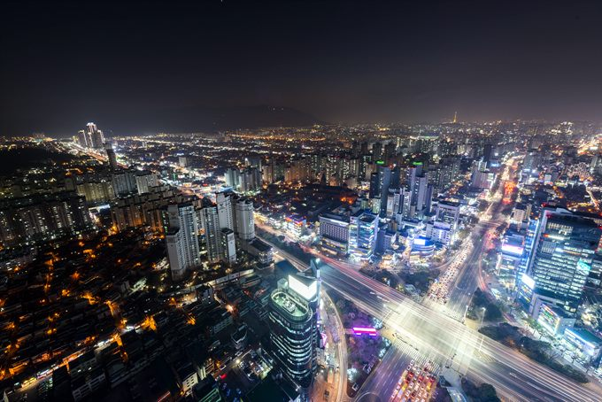

橋한국
한국이재명 정부 2년차, 728조 예산 'AI 대전환'에 건다
정부가 2026년을 'AI 대전환 원년'으로 선포하고 728조 원 슈퍼 확장 재정을 편성했다. AI 3대 강국 도약이 목표지만, 고환율·재정건전성 논쟁이 동시에 불붙는다.
정부가 2026년을 'AI 대전환 원년'으로 선포하고 728조 원 슈퍼 확장 재정을 편성했다. AI 3대 강국 도약이 목표지만, 고환율·재정건전성 논쟁이 동시에 불붙는다.
대통령 선거 정확히 1년 만에 치러진 전국 단위 선거. 지역 권력 지형과 국정 동력에 영향.

올해 1월 한중 정상회담으로 양국 관계가 9년 만에 정상 궤도에 올랐다. 경제·외교안보 대화 채널이 복원되고, 인적·문화 교류가 확대된다.

이재명 대통령이 유럽 순방 중 교황청에서 6·15 남북공동선언 26주년을 맞아 한반도 평화 의지를 밝혔다. "흡수통일을 추구하지 않는다"는 점을 거듭 분명히 하며, 출범 1년간의 긴장 완화 조치를 직접 거론했다.
이재명 대통령이 SNS에 올린 짧은 메시지를 두고 더불어민주당 안팎이 술렁였다. 정청래 대표 연임을 겨냥했다는 풀이와, 당 전체를 향한 각오라는 반론이 맞부딪쳤다.

이재명 대통령이 유럽 순방을 마무리하며 프랑스 에비앙에서 열리는 주요 7개국(G7) 정상회의에 초청국 자격으로 참석한다. 유럽 대륙에서 열리는 G7에 한국이 초청된 것은 처음이다.

대구와 경북을 하나로 묶는 행정통합 특별법이 국회 상임위 문턱을 넘으며 7월 출범 목표가 가시권에 들어왔다. 인구 소멸에 맞선 초광역 실험이 본궤도에 오를지 주목된다.
서울 을지로입구역에서 종각역에 이르는 도심 거리가 6월 13일 무지개 깃발로 채워졌다. 성소수자 연례행사인 서울퀴어퍼레이드가 올해로 27회를 맞았다.
내년에 적용할 최저임금 결정 시한이 다가오면서 최저임금위원회 논의가 막바지로 치닫고 있다. 노동계는 대폭 인상을, 경영계는 동결을 내세워 입장차가 좁혀지지 않고 있다.
검찰청을 폐지하고 공소청·중대범죄수사청으로 형사사법 체계를 재편하는 작업이 시행을 앞두고 있다. 검사는 수사 개시권을 잃고 기소와 공소유지에 집중하게 된다.
기상청이 6~8월 평균기온이 평년보다 높을 확률을 60%로 전망했다. 정부는 이상고온과 집중호우에 대비해 새로운 재난 경보 체계를 도입하기로 했다.
수도권 주택담보대출을 최대 6억원으로 묶은 6·27 부동산 대책이 시행 1년을 앞두고 있다. 국책연구기관 KDI는 규제 효과를 단정하기엔 이르다고 진단했다.
이재명 대통령이 6·10 민주항쟁 39주년을 맞아 국민 주권의 의미를 되새겼다. 같은 날이 6·10 만세운동 100주년이기도 하다는 점을 들어 두 사건의 공통점을 짚었다.